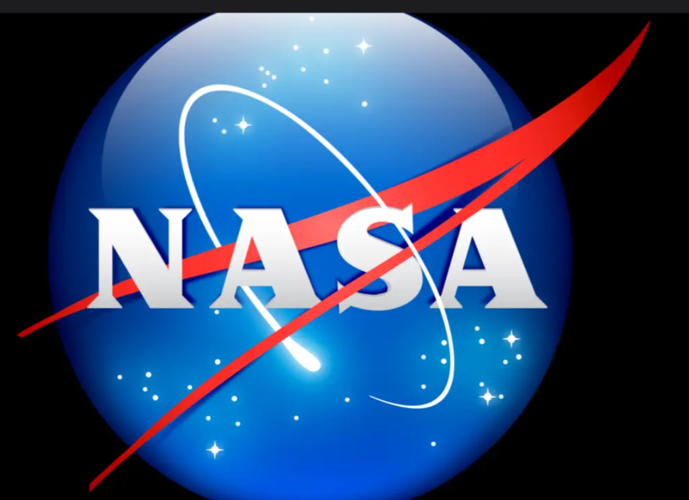

HELLO COSMO EXPLORERS!
This is our webpage where you will get live updates about astronomical discoveries,major NASA updates, live wallpapers, fun quizzes and mindblowing space facts!
Take the Space Quiz 🌠
Discover Space Facts 🌌
NASA News!!
Click here to read NASA’s latest news
For more exciting content and to get involved in citizen science projects, check out the NASA Citizen Science website!

Today's Astronomy Picture of the Day:
NOW LETS SEE THE STAR MAP !!!!
Interactive Star Map